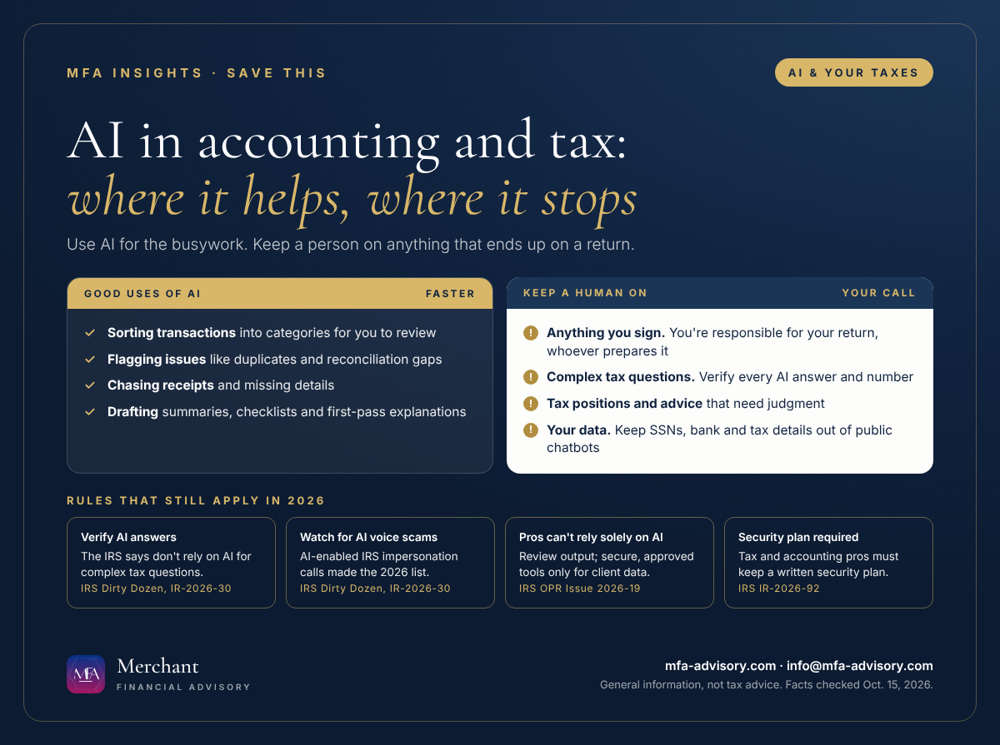

Executive summary
- You're responsible for your return, AI or not. The IRS says taxpayers are ultimately responsible for everything on their return, whoever prepares it.
- Verify every AI answer. The IRS's 2026 Dirty Dozen scam list tells taxpayers not to rely on AI for complex tax questions and to check any numbers AI gives them.
- New IRS guidelines for tax pros (June 24, 2026): practitioners "cannot rely solely on AI," must review its output, and may use only secure, enterprise-approved AI with client data.
- AI is good at busywork. Tools like QuickBooks' accounting AI sort transactions and flag reconciliation issues for you to review and post.
Bottom line: Let AI speed up the bookkeeping, but have a person check anything that goes on a return, and never paste your Social Security number or bank details into a public chatbot.
AI in accounting moved from novelty to everyday tool this year. It's built into bookkeeping software, and it answers tax questions in seconds. In 2026 the IRS also put its expectations in writing, both for taxpayers and for the professionals who prepare returns. This guide covers what the IRS said, where AI genuinely saves time, and where you still need a human to make the call.

IRS guidance on AI: the June 2026 guidelines for tax pros
On June 24, 2026, the IRS Office of Professional Responsibility, which oversees the Circular 230 rules for tax practitioners, published Introductory Guidelines for Responsible AI Use in Federal Tax Practice (Issue 2026-19). It doesn't create new rules. It explains how the duties practitioners already have apply when they use AI:
| Duty (Circular 230) | What the IRS says it means with AI |
|---|---|
| Competence (§10.35) | Understand the AI tools you use, including their limits, and be able to spot errors and bias. |
| Due diligence (§10.22) | Review AI output before it goes to a client or the IRS, including facts, citations and calculations. Practitioners "cannot rely solely on AI." |
| Written advice (§10.37) | Independently check any facts and legal authorities that AI supplies. Treat AI text as a draft. |
| Supervision (§10.36) | Firms need AI procedures, staff training and vetting of third-party AI tools. Final decisions rest with qualified professionals. |
| Confidentiality (IRC §§6713, 7216) | Use only secure, enterprise-approved AI for client data, and never upload sensitive data to unsecured sites. |
| Fees (§10.27) | Don't bill for time AI saved. The guidance suggests passing cost savings on to clients. |
The guidance's closing message sums it up: technology is "a powerful tool, not a substitute for professional judgment."
Can I use AI to do my taxes?
You can use AI to learn, organize and draft, but the IRS is clear about two things. First, taxpayers are "ultimately responsible for all the information on their federal income tax return," regardless of who, or what, prepared it. Second, in its 2026 Dirty Dozen scam list (IR-2026-30), the IRS tells taxpayers not to rely on AI-generated responses to complex tax questions and to verify any calculations or information AI provides.
In practice, using AI for tax preparation safely looks like this:
- Use it to understand, not to decide. Ask AI to explain a form or a term, then confirm the answer on irs.gov or with a professional.
- Check every number against your W-2s, 1099s and records before it goes on a return.
- Keep personal data out of public chatbots. Don't paste Social Security numbers, bank accounts or full tax documents into a tool you don't control.
- Read your return before you sign, as the IRS advises, and ask about anything that isn't clear.
Where AI genuinely helps with bookkeeping
The biggest time savings are in day-to-day bookkeeping, where AI suggests and a person approves. QuickBooks AI is a good example. According to Intuit, QuickBooks Online's accounting AI can:
- Group transactions it's confident about as "ready to post," with suggested categories, customers and vendors you can edit before posting.
- Auto-post certain transactions, such as payroll from Intuit's own payroll products, and label them so you know the work was done for you.
- Request missing receipts and details through a single link, and check that the right files came back.
- On Plus, Advanced and Enterprise Suite plans, flag issues during bank reconciliation and review the P&L and balance sheet for problems like duplicate transactions and miscategorizations.
That's useful, but a wrong category still flows straight into your financial statements and your tax return. A monthly review by someone who knows your business is what keeps AI-sorted books accurate.
AI tax scams to watch for in 2026
AI is also helping scammers. The IRS's 2026 Dirty Dozen list includes AI-enabled IRS impersonation by phone: robocalls, voice mimicry and spoofed caller ID designed to sound legitimate. If a call pressures you to pay right away, hang up and contact the IRS directly through irs.gov.
For tax and accounting firms: a written information security plan
If you prepare returns or keep books for others, data security isn't optional. The IRS reminded tax professionals in August 2026 (IR-2026-92) that federal law requires them to create and maintain a written information security plan (WISP), under the FTC Safeguards Rule. IRS Publication 5708 offers a template. Any AI tool that touches client data belongs in that plan.
New Jersey and New York
The IRS guidance points to state AI laws in California, Colorado, Illinois and Utah. New Jersey and New York aren't on that list. For filers in both states, the federal rules and IRS guidance above are what govern how AI is used on federal returns.
FAQs
You can use AI to understand forms and organize documents, but you're responsible for everything on your return. The IRS says not to rely on AI for complex tax questions and to verify any numbers it gives you.
Issue 2026-19, published June 24, 2026 by the IRS Office of Professional Responsibility. It says practitioners can't rely solely on AI, must review its output, and must use only secure, enterprise-approved AI with client data.
It can categorize transactions and flag issues, but it works by suggestion. Review what it posts, especially categories, because errors carry into your financial statements and tax return.
Yes. AI-enabled IRS impersonation calls using voice mimicry and spoofed caller ID are on the IRS's 2026 Dirty Dozen list.
Yes. The IRS says federal law requires tax and accounting professionals to create and maintain one. IRS Publication 5708 provides a template.
Merchant Financial Advisory (MFA), an accounting and tax solutions provider in Princeton, New Jersey, helps individuals and small and mid-sized businesses in New Jersey, New York and nationwide keep clean books and accurate returns. See our bookkeeping and tax services, our Form 1099 guide and our SALT cap guide, or book a call below.
Get key tax dates and new articles by email
Every new MFA Insights article, the IRS, New Jersey and New York deadlines that matter, and a calendar you can save. For individuals and small and mid-sized businesses.
Almost done: check your inbox and click the confirmation link to join MFA Insights. (If you don't see it in a minute, check Promotions or Spam.)
Have a question about this?
Ask us privately. Your question goes straight to our inbox, not onto the page, and we reply by email within one to three business days. Please don't include Social Security or account numbers.
Thanks, your question is in. We'll reply by email within one to three business days.
Sources
- IRS Office of Professional Responsibility, Issue 2026-19: Introductory Guidelines for Responsible AI Use in Federal Tax Practice (June 24, 2026)
- IRS IR-2026-30: Dirty Dozen tax scams for 2026
- IRS: Tips for choosing a tax professional
- IRS IR-2026-92: Tax pros need a Written Information Security Plan
- IRS Publication 5708: Creating a Written Information Security Plan for Your Tax & Accounting Practice
- Intuit QuickBooks: Learn about Accounting AI features
Facts checked against the sources above as of October 15, 2026. This article is general information, not tax, legal, or financial advice, and reading it does not create a client relationship. Tax rules change and every situation is different; confirm the details for your situation with a qualified professional before acting.